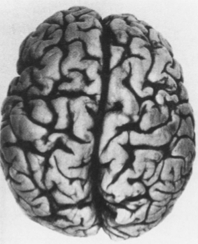
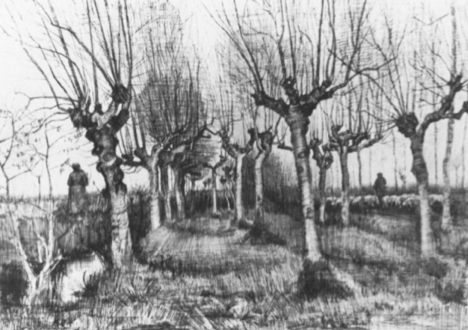
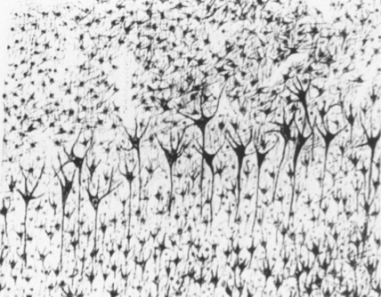
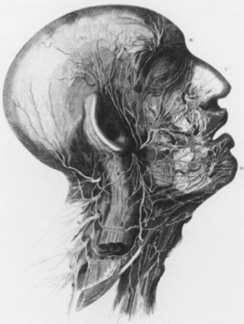

Aesthetics and Anaesthetics, Part I
Walter Benjamin’s Artwork Essay Reconsidered
I am grateful to Joan Sage for her help with the photographs for this piece.
I
Walter Benjamin’s essay “The Work of Art in the Age of Mechanical Reproduction”1 is generally taken to be an affirmation of mass culture and of the new technologies through which it is disseminated. And rightly so. Benjamin praises the cognitive, hence political, potential of technologically mediated cultural experience (film is particularly privileged).2 Yet the closing section of this 1936 essay reverses the optimistic tone. It sounds a warning. Fascism is a “violation of the technical apparatus” that parallels fascism’s violent “attempt to organize the newly proletarianized masses”-not by giving them their due, but by “allowing them to express themselves.”3 “The logical result of Fascism is the introduction of aesthetics into political life.”4
Benjamin seldom makes sweeping condemnations, but here he states categorically: “All efforts to render politics aesthetic culminate in one thing: war.”5 He is writing during the early period of fascist military adventurism-Italy’s colonial war in Ethiopia, Germany’s intervention in the Spanish Civil War. Yet Benjamin recognizes that the aesthetic justification of this policy was already in place at the century’s start. It was the Futurists who, just before World War I, first articulated the cult of warfare as a form of aesthetics. Benjamin cites their manifesto:
War is beautiful because it establishes human domination over the subjugated machinery, thanks to the gas masks, the terror-producing megaphones, the flame-throwers, the small tanks. War is beautiful because it initiates the dream of metalization of the human body. War is beautiful because it enriches a flowering meadow with the fiery orchids of machine guns. War is beautiful because it fuses gunfire, cannonades, cease-fires, the scents and stench of putrefaction into a symphony. War is beautiful because it creates the new architectural form of big tanks, geometrical flight formations, smoke spirals from burning villages…6
Benjamin concludes:
Fiat ars — pereat mundus [create art — destroy the world],7 says Fascism, and expects war to supply, just as Marinetti confesses that it does, the artistic gratification of a sense perception that has been altered by technology. This is the obvious perfection of l’art pour l’art. Humanity that, according to Homer, was once an object of spectacle for the Olympian gods, now is one for itself. Its self-alienation has reached such a degree that it is capable of experiencing its own destruction as an aesthetic enjoyment of the highest order. So it is with the aestheticization of politics, which is being managed by fascism. Communism responds with the politicization of art.8
This paragraph has haunted me for the twenty-odd years I have been reading the Artwork essay — a period when politics as spectacle (including the aestheticized spectacle of war) has become a commonplace in our televisual world. Benjamin is saying that sensory alienation lies at the source of the aestheticization of politics, which fascism does not create, but merely “manages” (betreibt). We are to assume that both alienation and aestheticized politics as the sensual conditions of modernity outlive fascism — and thus so does the enjoyment taken in viewing our own destruction.
The Communist response to this crisis is to “politicize art,” implying — what? Surely Benjamin must mean more than to make culture a vehicle for Communist propaganda.9 He is demanding of art a task far more difficult — that is to undo the alienation of the corporeal sensorium, to restore the instinctual power of the human bodily senses for the sake of humanity’s self-preservation, and to do this, not by avoiding the new technologies, but by passing through them.
The problem of interpreting the closing sectio
In of Benjamin’s text lies in the fact that, halfway through this final thought, Benjamin changes the constellation in which his conceptual terms are deployed, and hence their meaning. If we were really to “politicize art” in the radical way he is suggesting, art would cease to be art as we know it. Moreover, the key term “aesthetics” would shift its meaning one hundred and eighty degrees. “Aesthetics would be transformed, indeed, redeemed so that, ironically (or dialectically), it would describe the field in which the antidote to fascism is deployed as a political response.
This point may seem trivial, or unnecessarily sophistic. But if it is allowed to develop, it changes the entire conceptual order of modernity. That is my claim. Benjamin’s critical understanding of mass society disrupts the tradition of modernism (far more radically, incidentally, than does his contemporary, Martin Heidegger) by exploding the constellation of art, politics, and aesthetics into which, by the twentieth century, this tradition has congealed.
II
What I will try not to do is to take you through the whole history of Western metaphysics in order to demonstrate the permutations of this constellation in terms of the inner-historical development of philosophy, a decontextualized “life of the mind.” Others have done this with sufficient brilliance to make clear the unfruitfulness of this approach for the problem with which we are dealing, because it presumes just that continuity in the cultural tradition which Benjamin wanted to explode.10
But it will be helpful to recall the original etymological meaning of the word “aesthetics,” because it is precisely to this origin that, via Benjamin’s revolution, we find ourselves returned. Aisthitikos is the Greek word for that which is “perceptive by feeling.” Aisthisis is the sensory experience of perception. This original field of aesthetics is not art but reality — corporeal, material nature. As Terry Eagleton writes: “Aesthetics is born as a discourse of the body.”11 It is a form of cognition, achieved through taste, touch, smell, hearing seeing — the whole corporeal sensorium. The terminae of all of these — nose, eyes, ears, mouth, some of the most sensitive areas of skin — are located at the surface of the body, the mediating boundary between inner and outer. This physical-cognitive apparatus with its qualitatively autonomous, nonfungible sensors (the ears cannot smell, the mouth cannot see) is “out front” of the mind, encountering the world pre-linguistically,12 hence prior not only to logic but to meaning as well. Of course all of the senses can be acculturated — that is the whole point of philosophical interest in “aesthetics” in the modern era.13 But however strictly the senses are trained (as moral sensibility, refinement of “taste,” sensitivity to cultural norms of beauty), all of this is a posteriori. The senses maintain an uncivilized and uncivilizable trace, a core of resistance to cultural domestication.14 This is because their immediate purpose is to serve instinctual needs — for warmth, nourishment, safety, sociability15 — in short, they remain a part of the biological apparatus, indispensable to the self-preservation of both the individual and the social group.
III
So little does aesthetics have to do intrinsically with the philosophical trinity of Art, Beauty, and Truth that one might rather place it within the field of animal instincts.16 This is, of course, just what made philosophers suspicious of “the aesthetic.” Even as Alexander Baumgarten articulated “aesthetics” for the first time as an autonomous field of inquiry, he was aware that “one could accuse him of concerning himself with things unworthy of a philosopher.”17
Just how it happened that, within the course of the modern era, the term “aesthetics” underwent a reversal of meaning so that in Benjamin’s time it was applied first and foremost to art — to cultural forms rather than sensible experience, to the imaginary rather than the empirical, to the illusory rather than the real — is not self-evident. It demands a critical, exoteric explanation of the socioeconomic and political context in which the discourse of the aesthetic was deployed, as Terry Eagleton has recently demonstrated in The Ideology of the Aesthetic. Eagleton traces the ideological implications of this concept during its checkered career in the modern era — how it bounces like a ball among philosophical positions, from its critical-materialist connotations in Baumgarten’s original articulation, to its class-based meaning in the work of Shaftesbury and Burke as an aesthetics of “sensibility,” an aristocratic moral style, and thence to Germany. There, throughout the tradition of German idealism, it was recognized with varying degrees of caution as a legitimate cognitive mode, yet evermore fatally connected with the sensuous, the heteronomous, the fictitious, only to end up in the neo-Kantian schema of Habermas as (to cite Fredric Jameson) “a kind of sandbox to which one consigns all those vague things … under the heading of the irrational … [where] they can be monitored and, in case of need, controlled (the aesthetic is in any case conceived of as a kind of safety valve for irrational impulses).”18
The story is quite incredible, really, particularly when one considers the leitmotif that runs through all of these alterations, the ground from which the “aesthetic” pushes forth in its various forms. It is the motif of autogenesis, surely one of the most persistent myths in the whole history of modernity (and of Western political thought before then, one might add).19 Doing one better than Virgin birth, modern man, homo autotelus, literally produced himself, generating himself, to cite Eagleton, “miraculously out of [his] own substance.”20
What seems to fascinate modern “man” about this myth is the narcissistic illusion of total control. The fact that one can imagine something that is not, is extrapolated in the fantasy that one can (re)create the world according to plan (a degree of control impossible, for example, in the creation of a living, breathing child). It is the fairy-tale promise that wishes are granted — without the fairy tale’s wisdom that the consequences can be disastrous. It must be admitted that this myth of creative imagination has had salutary effects, as it is intimately entwined with the idea of freedom in Western history. For that reason (an excellent reason), it has been staunchly defended and highly praised.21
Yet present feminist consciousness in scholarship has revealed how fearful of the biological power of women this mythic construct can be.22 The truly autogenetic is entirely self-contained. If it has any body at all, it must be one impervious to the senses, hence safe from external control. Its potency is in its lack of corporeal response. In abandoning its senses, it, of course, gives up sex. Curiously, it is precisely in this castrated form that the being is gendered male — as if, having nothing so embarrassingly unpredictable or rationally uncontrollable as the sense-sensitive penis, it can then confidently claim to be the phallus. Such an asensual, anaesthetic protruberance is this artifact: modern man.
Consider Kant on the sublime. He writes that, faced with a threatening and menacing nature — towering cliffs, a fiery volcano, a raging sea — our first impulse, connected (not unreasonably) to self-preservation,23 is to be afraid. Our senses tell us that, faced with nature’s might, “our ability to resist becomes an insignificant trifle.”24 But, says Kant, there is a different, more “sensible” (!) standard, which we acquire when viewing these awesome forces from a “safe” place, by which nature is small and our superiority immense:
Though the irresistibility of nature’s might makes us, considered as natural beings, recognize our physical impotence, it reveals in us at the same time an ability to judge ourselves independent of nature, and reveals in us a superiority over nature that is the basis of a self-preservation quite different in kind… . 25
It is at this point in the text that the modern constellation of aesthetics, politics, and war congeals, linking the fate of those three elements. Kant’s example of the man most worthy of respect is the warrior, impervious to all his sense-giving information of danger. “Hence, no matter how much people may dispute, when they compare the statesman with the general, as to which one deserves the superior respect, an aesthetic judgment decides in favor of the general.”26 Both statesman and general are held by Kant in higher “aesthetic” esteem than the artist, as both, in shaping reality rather than its representations, are mimicking the autogenetic prototype, the nature- and self-producing Judeo-Christian God.
If in the Third Critique the “aesthetic” in judgments is robbed of its senses, in the Second Critique the senses play no role at all. The moral being is sense-dead from the start. Again, Kant’s ideal is autogenesis. The moral will, cleansed of any contamination by the senses (which, in the First Critique, are the source of all cognition), sets up its own rule as a universal norm. Reason produces itself in Kant’s morality — the most “sublimely” when one’s own life is sacrificed to the idea.
“The further Kant goes,” Ernst Cassirer writes, “the more he rids himself … of the prevailing sentimentality” of the “Age of Sensibility.”27 To be historically accurate, it should be acknowledged that this sensibility, influenced enormously by Johann Winckelmann’s conception of Hellenism, was homophilic. It affirmed the aesthetic beauty, first and foremost, of the male body. Indeed, homoerotic sensuality may have been even more threatening to the emerging modernist psyche than the reproductive sexuality of women.28 Kant’s transcendental subject purges himself of the senses which endanger autonomy not only because they unavoidably entangle him in the world, but, specifically, because they make him passive (“languid” [schmelzend] is Kant’s word) instead of active (“vigorous” [wacker]),29 susceptible, like “Oriental voluptuaries,”30 to sympathy and tears. Cassirer writes that this was
the reaction of Kant’s completely virile way of thinking to the effeminacy and over-softness that he saw in control all around him. It is in this sense, in fact, that he came to be understood… . Not only Schiller, who explicitly lamented in a letter to Kant that he had momentarily taken on the “aspect of an opponent,” but Wilhelm von Humboldt, Goethe, and Hölderlin also concur in this judgment. Goethe extols as Kant’s “immortal service” that he released morality from the feeble and servile estate into which it had fallen, through the crude calculus of happiness, and thus “brought us all back from the effeminacy [Weichlichkeit] in which we were wallowing.”31
The theme of the autonomous, autotelic subject as sense-dead, and for this reason a manly creator, a self-starter, sublimely self-contained,32 appears throughout the nineteenth century, as does the notion of the “aesthetics” of this creator with the warrior, and hence with war. At the end of the century, with Nietzsche, there is a new affirmation of the body, but it remains self-contained, taking the highest pleasure in its own biophysical emanations. Nietzsche’s ideal of the artist-philosopher, the embodiment of the Will to Power, manifests the elitist values of the warrior,33 perhaps “so far distant from other men that he can form them.”34 This combination of autoerotic sexuality and wielding power over others is what Heidegger calls Nietzsche’s “Mannesaesthetik.”35 It is to replace what Nietzsche himself calls “Weibesaesthetik”36 — “female aesthetics” of receptivity to sensations from the outside.
One could go on documenting this solipsistic — and often truly silly — fantasy of the phallus, this tale of all-male reproduction, the magic art of creation ex nihilo. But, although the theme will return below, I want to argue for the philosophical fruitfulness of a different approach, one more in line with Benjamin’s own method in the Artwork essay. And that is to trace the development, not of the meaning of terms, but of the human sensorium itself.
IV
The senses are effects of the nervous system, composed of hundreds of billions of neurons extending from the body surfaces through the spinal cord, to the brain. The brain, it must be said, yields to philosophical reflection a sense of the uncanny. In our most empiricist moments, we would like to take the matter of the brain itself for the mind. (What could be more appropriate than the brain studying the brain?) But there seems to be such an abyss between us, alive, as we look out on the world, and that gray-white gelatinous mass with its cauliflower-like convolutions that is the brain (the biochemistry of which does not differ qualitatively from that of a sea slug) that, intuitively, we resist naming them as identical. If this “I” who examines the brain were nothing but the brain, how is it that I feel so uncomprehendingly alien in its presence?37

Brain of Sonja Kovalevskaya, Russian mathematician (1840-1901).
Hegel thus has intuition on his side in his attacks against the brain-watchers. If you want to understand human thought, he argues in The Phenomenology of Mind, don’t place the brain on a dissecting table, or feel the bumps on the head for phrenological information. If you want to know what the mind is, examine what it does — thus is philosophy turned away from natural science to the study of human culture and human history. The two discourses henceforth went separate ways: philosophy of the mind and physiology of the brain remained, for the most part, as blind to the activities of one another as the two hemispheres of a “split-brain” patient are oblivious to the operations of each other — arguably, to the detriment of both.38
The nervous system is not contained within the body’s limits. The circuit from sense-perception to motor response begins and ends in the world. The brain is thus not an isolable anatomical body, but part of a system that passes through the person and her or his (culturally specific, historically transient) environment. As the source of stimuli and the arena for motor response, the external world must be included to complete the sensory circuit. (Sensory deprivation causes the system’s internal components to degenerate.) The field of the sensory circuit thus corresponds to that of “experience,” in the classical philosophical sense of a mediation of subject and object, and yet its very composition makes the so-called split between subject and object (which was the constant plague of classical philosophy) simply irrelevant. In order to differentiate our description from the more limited, traditional conception of the human nervous system which artificially isolates human biology from its environment, we will call this aesthetic system of sense-consciousness, decentered from the classical subject, wherein external sense-perceptions come together with the internal images of memory and anticipation, the “synaesthetic system.”39

Vincent Van Gogh. Pollard Birches. 1885.

Illustrations of cells described by Vladimir Betz.
The synaesthetic system is “open” in the extreme sense. Not only is it open to the world through the sensory organs, but the nerve cells within the body form a network that is in itself discontinuous. They reach out toward other nerve cells at points called synapses, where electrical charges pass through the space between them. Whereas in blood vessels a leak is lamentable, in the networks between nerve bundles, everything “leaks.” Any cross section of the brain levels show this architectonic discontinuity, and the dendrite-like morphology of their extensions. The giant, pyramid-like layer of cells in the brain cortex was first described in 1874 by the Ukrainian anatomist Vladimir Betz.40 A decade later, coincidentally, Vincent van Gogh, while a mental patient at St. Remy, found this form replicated in the external world.
V
Let us resist for a moment Hegel’s abandonment of physiology and follow the neurological inquiry of one of his contemporaries, the Scottish anatomist Sir Charles Bell. Trained in painting as well as surgical medicine, Bell, with great excitement, studied the fifth nerve, the “grand nerve of expression,” in the belief that “the countenance is the index of the mind.”41

The Fifth Nerve. From Sir Charles Bell, On the Nerves, 1821.
The expressive face is, indeed, a wonder of synthesis, as individual as a fingerprint, yet legible by common sense. On it the three aspects of the synaesthetic system — physical sensation, motor reaction, and psychical meaning — converge in signs and gestures comprising a mimetic language. What this language speaks is anything but the concept. Written on the body’s surface as a convergence between the impress of the external world and the express of subjective feeling, the language of this system threatens to betray the language of reason, undermining its philosophical sovereignty.
Hegel, writing The Phenomenology of Mind in his Jena study in 1806, interpreted the advancing army of Napoleon (whose cannons he could hear roaring in the distance) as the unwitting realization of Reason. Sir Charles Bell, who, as a field doctor performing limb amputations, was physically present a decade later at the Battle of Waterloo, had a different interpretation:
It is a misfortune to have our sentiments at variance with the universal sentiment. But there must ever be associated with the honours of Waterloo, in my eyes, the shocking signs of woe: to my ears, accents of intensity, outcry from the manly breast, interrupted, forcible expressions from the dying — and noisome smells. I must show you my note book [with sketches of the wounded], for … it may convey an excuse for this excess of sentiment.42
Bell’s “excess of sentiment” did not mean emotionalism. He found his “mind calm amidst such a variety of suffering.”43 And it would be grotesque to interpret “sentiment” in this context as having anything to do with “taste.” The excess was one of perceptual acuity, material awareness that ran out of the control of conscious will or intellection. It was not a psychological category of sympathy or compassion, of understanding the other’s point of view from the perspective of intentional meaning, but rather physiological — a sensory mimesis, a response of the nervous system to external stimuli which was “excessive” because what he apprehended was unintentional, in the sense that it resisted intellectual comprehension. It could not be given meaning. The category of rationality could be applied to these physiological perceptions only in the sense of rationalization.44
VI
Walter Benjamin’s understanding of modern experience is neurological. It centers on shock. Here, as seldom elsewhere, Benjamin relies on a specific Freudian insight, the idea that consciousness is a shield protecting the organism against stimuli — “excessive energies”45 — from without, by preventing their retention, their impress as memory. Benjamin writes: “The threat from these energies one of shocks. The more readily consciousness registers these shocks, the less likely they are to have a traumatic effect.”46 Under extreme stress, the ego employs consciousness as a buffer, blocking the openness of the synaesthetic system,47 thereby isolating present consciousness from past memory. Without the depth of memory, experience is impoverished.48 The problem is that under conditions of modern shock — the daily shocks of the modern world — response to stimuli without thinking has become necessary for survival.
Benjamin wanted to investigate the “fruitfulness” of Freud’s hypothesis, that consciousness parries shock by preventing it from penetrating deep enough to leave a permanent trace on memory, by applying it to “situations far removed from those which Freud had in mind.”49 Freud was concerned with war-neurosis, the trauma of “shell shock” and catastrophic accident that plagued soldiers in World War I. Benjamin claimed this battlefield experience of shock “has become the norm” in modern life.50 Perceptions that once occasioned conscious reflection are now the source of shock-impulses that consciousness must parry. In industrial production no less than modern warfare, in street crowds and erotic encounters, in amusement parks and gambling casinos, shock is the very essence of modern experience. The technologically altered environment exposes the human sensorium to physical shocks that have their correspondence in psychic shock, as Baudelaire’s poetry bears witness. To record the “breakdown” of experience was the “mission” of Baudelaire’s poetry: he “placed the shock experience as the very center of his artistic work.”51
The motor responses of switching, snapping, the jolt in movement of a machine have their psychic counterpart in the “sectioning of time”52 into a sequence of repetitive moments without development. The effect on the synaesthetic system53 is brutalizing. Mimetic capacities, rather than incorporating the outside world as a form of empowerment, or “innvervation,”54 are used as a deflection against it. The smile that appears automatically on passersby wards off contact, a reflex that “functions as a mimetic shock absorber.”55
Nowhere is mimesis as a defensive reflex more apparent than in the factory, where (Benjamin cites Marx) “workers learn to coordinate their own ‘movements to the uniform and unceasing motion of an automaton.”56 “Independently of the worker’s volition,the article being worked on comes within his range of action and moves away from him just as arbitrarily.”57 Exploitation is here to be understood as a cognitive category, not an economic one: The factory system, injuring every one of the human senses, paralyzes the imagination of the worker.58 His or her work is “sealed off from experience;” memory is replaced by conditioned response, learning by “drill,” skill by repetition: “practice counts for nothing.”59
Perception becomes experience only when it connects with sense-memories of the past; but for the “protective eye” that wards off impressions, “there is no daydreaming surrender to faraway things.”60 Being”cheated out of experience” has become the general state,61 as the synaesthetic system is marshaled to parry technological stimuli in order to protect both the body from the trauma of accident and the psyche from the trauma of perceptual shock. As a result, the system reverses its role. Its goal is to numb the organism, to deaden the senses, to repress memory: the cognitive system of synaesthetics has become, rather, one of anaesthetics. In this situation of “crisis in perception,” it is no longer a question of educating the crude ear to hear music, but of giving it back hearing. It is no longer a question of training the eye to see beauty, but of restoring “perceptibility.”62
The technical apparatus of the camera, incapable of “returning our gaze,” catches the deadness of the eyes that confront the machine — eyes that “have lost their ability to look.”63 Of course, the eyes still see. Bombarded with fragmentary impressions they see too much — and register nothing. Thus the simultaneity of overstimulation and numbness is characteristic of the new synaesthetic organization as anaesthetics. The dialectical reversal, whereby aesthetics changes from a cognitive mode of being “in touch” with reality to a way of blocking out reality, destroys the human organism’s power to respond politically even when self-preservation is at stake.
This is the now-conventional English translation (see Harry Zohn, trans., Illuminations, ed. Hannah Arendt [New York: Schocken Books, 1969]). The literal translation of the German title is significantly different: “The Artwork in the Age of its Technological Reproducibility (technischen Reproduzierbarkeit).” I have sidestepped the problem by using a shortened form: Artwork essay. ↩
The best reading of Benjamin’s Artwork essay remains Mirian Hansen’s “Benjamin, Cinema and Experience,” New German Critique 40 (Winter 1987). ↩
“The masses have the right to a change in property relations; Fascism seeks to give them a form of expression in the preservation of these relations” (Benjamin, Illuminations, p. 241, trans. modified). ↩
Ibid. ↩
Ibid. ↩
Ibid., p. 242 (trans. modified). ↩
A distortion of the Baroque original: “Create justice, transform the world,” the electoral promise of Emperor Ferdinand I (1563). See Walter Benjamin, Gesammelte Schriften, 1:3, ed. Rolf Tiedemann and Hermann Schweppenhaeuser (Frankfurt a.M.: Suhrkamp Verlag, 1974), p. 1055. ↩
Benjamin, Illuminations, p. 242 (trans. modified). ↩
Otherwise, the two conditions, crisis and response, would turn out to be the same. Once art is drawn into politics (Communist politics no less than Fascist politics) how could it help but put itself into its service, thus to render up to politics its own artistic powers, i.e. “aestheticize politics?” ↩
Heidegger has been particularly concerned with the philosophical wanderings of the key term “aesthetics” in Western philosophy (see, e.g., his lectures from 1936/37 — contemporaneous with Benjamin’s essay — Nietzsche: Der Wille zur Macht als Kunst, vol. 43 of Martin Heidegger, Gesammtausgabe II: Abteilung: Vorlesungen, 1923-76 [Frankfurt a.M.: Vittorio Klostermann, 1985]). For a provocatively critical and contextualized account of the discourse of “aesthetics” within the modern era of European culture, see Terry Eagleton, The Ideology of the Aesthetic (London: Basil Blackwell, 1990). For an excellent intellectual history of the connection between aesthetics and politics in German thought that stresses the importance of Hellenism in general and of Wincklemann in particular (omitted from Eagleton’s account), the idea of Greeks as an “aesthetic” and “cultural” people as opposed to material and imperial Rome, see Josef Chytry, The Aesthetic State: A Quest in Modern German Thought (Berkeley: UC Press, 1989). ↩
Eagleton, Ideology of the Aesthetic, p. 13. Eagleton is dealing with the historical birth of aesthetics as a modern discourse (specifically, in the work of the mid-18th century German philosopher Alexander Baumgarten), and describes the political implications of this anti-Cartesian focus on the “dense, swarming territory” outside of the mind that comprises “nothing less than the whole of our sensate life together,” as the “first stirrings of a primitive materialism — of the body’s long inarticulate rebellion against the tyranny of the theoretical” (p. 13). ↩
This was its meaning for Baumgarten, who first developed the “aesthetic” as an autonomous thematic in philosophy. Yet Eagleton is correct to note that the affirmation of sense experience is short-lived in Baumgarten’s theory: “If his Aesthetica (1750) opens up in an innovative gesture the whole terrain of sensation, what it opens it up to is in effect the colonization of reason” (Eagleton, Ideology of the Aesthetic, p. 15). ↩
See, e.g., Rousseau’s discussion of the education of the senses in Emile. ↩
Baumgarten distinguishes between aesthetica artificialis (to which he devotes the majority of his text) and aesthetica naturalis, as it is observed in children’s play. ↩
Sociability is not only a historico-cultural category, but a part of our “nature.” That much must be granted to sociobiology (and to Aristotle and Marx, for that matter). The mistake is to presume that today’s societies are accurate expressions of this biological instinct. It could be argued, for example, that precisely in its most biological aspect (reproduction of our species), the privatized family is unsocial. ↩
Again, the relation is dialectical: if neither the individual nor the social ever exists as “nature,” but always only as “second nature” (hence, culturally constructed), it is equally true that neither the “individual” nor the “social” enters into the culturally constructed world without leaving a remainder, a biological substrate that can provide the basis for resistance. ↩
Benedetto Croce, cited in Hans Rudolf Schweizer, Aesthetik als Philosophie der Sinnlichen Erkenntnis (Basil: Schwabe and Co., 1973), p. 33. Schweizer claims, against Croce, that Baumgarten was not overly concerned or apologetic, and that the real bias against the aesthetic is a later develop. ↩
Fredric Jameson, Late Marxism: Adorno, or, the Persistence of the Dialectic (New York: Verso, 1990), p. 232. ↩
The “birth” of the Greek polis is attributed precisely to the wondrous idea that man can produce himself ex nihilo. The polis becomes the artifact of “man,” in which he can bring forth, as a material reality, his own higher essence. Similarly, Machiavelli wrote in praise of the Prince who self-creatively founds a new principality, and connects this autogenetic act with the height of manliness. ↩
Eagleton, Ideology of the Aesthetic, p. 64. ↩
See Carlos Castoriades, The Imaginary Institution of Society, trans. Kathleen Blamey (Cambridge: MIT Press, 1987). ↩
See, for example, the work of Luce Irigaray. For an excellent discussion of the parameters of the feminist debate, see articles by Seyla Benhabib, Judith Butler, and Nancy Frazer in Praxis International 2 (July 1991), pp. 137-77. ↩
This “first impulse” might, in fact, be considered superior. But Kant writes condescendingly of the Savoyard peasant who, unlike the enraptured bourgeois tourist, “did not hesitate to call anyone a fool who fancies glaciered mountains” (Critique of Judgment, trans. Werner S. Pluhar [Indianapolis: Hackett, 1987], p. 124). ↩
Kant, Critique of Judgment, pp. 120-21. Again, from an ecological perspective, this is not a foolish response. ↩
Ibid. ↩
Ibid., pp. 121-22. ↩
Ernst Cassirer, Kant’s Life and Thought, trans. James Haden, intro. Stephan Körner (New Haven: Yale University Press, 1981), p. 269. ↩
Was it merely a coincidence that Kant praised as sublime precisely those Swiss alps, the size and precipitous appearance of which so appalled Winckelmann that, upon coming within sight of them in 1768, he abandoned his planned return to Germany and turned back to Italy? ↩
Kant, Critique of Judgment, p. 133. ↩
Ibid., p. 134. ↩
Cassirer, Kant’s Life and Thought, p. 270. Cassirer is citing Goethe’s comment to Chancellor von Muller, April 1818. (The translation in Cassirer’s book is more strongly gendered than Goethe’s text. Thanks to Alexandra Cook for pointing this out.) Goethe’s famous study of Winckelmann (1805) praises him for living a life close to the ancient Hellenic ideal. This included, explicitly, his sensual relationships with beautiful young men. It was Kant’s Critique of Judgment that “captivated” Goethe (Cassirer, p. 273). ↩
“To be sufficient to oneself and hence have no need of society, yet without being unsociable, i.e., without shunning society, is something approaching the sublime, as is any case of setting aside our needs” (Critique of Judgment, p. 136). ↩
The work of warriors is “an instinctive creation and imposition of forms … they do not know what guilt, responsibility or consideration are … they exemplify that terrible artists’ egoism that … knows itself justified to all eternity in its ‘work,’ like a mother in her child” (Nietzsche, cited in Eagleton, p. 237). ↩
Friedrich Nietzsche, The Will to Power, trans. Walter Kaufmann and R. J. Hollingdale (New York: Random House, 1967), p. 419. ↩
Heidegger, Nietzsche, pp. 91-92. The dichotomy of terms does not appear in Nietzsche’s text. ↩
Nietzsche, Will to Power, p. 429. ↩
Modern philosophers have quite persistnetly refused to conflate the brain with the “mind.” Descartes gave the soul protection from the “body machine” of the brain-nerves-muscles by locating it in “a certain extremely small gland” suspended in the middle of the brain (see The Passions of the Soul). Kant’s transcendental consciousness of the self manages to bypass the brain from the start. ↩
Contemporary brain research, while impressive in its application of new technologies that allow us to “see” the brain in ever-greater detail, has suffered from too little philosophical and theoretical radicalism, while philosophy risks speaking in a language so archaic, given the new empirical discoveries of neuroscience, that it relegates itself to scholastic irrelevance — or simply to myth. Recently, however, there has been an interest in reconnecting the discourses. See, e.g., Patricia Smith Churchland, Neurophilosophy (Cambridge: MIT Press, 1986); J. Z. Young, Philosophy and the Brain (New York: Oxford University Press, 1987); and the many books by prolific author R. M. Young. ↩
If the “center” of this system is not in the brain, but on the body’s surface, then subjectivity, far from bounded within the biological body plays the role of mediator between inner and outer sensations, the images of perception and those of memory. For this reason, Freud situation consciousness on the surface of the body, decentered from the brain (which he was willing to view as nothing more than large and evolved nerve ganglia). ↩
Betz left no illustration of the cells he described and that were named after him. ↩
Cited in Sir Gordon Gordon-Taylor and E. W. Walls, Sir Charles Bell: His Life and Times (London: E. & S. Livingstone, 1958), p. 116. In his enthusiasm for the philosophical implications of his discovery, Bell was careless about the physiological ones, with the result that a French colleague preempted him in scientific publication. It led to an unpleasant struggle between them as to who made the discovery first. See Pual F. Cranefield, The Way In and the Way Out: François Magendie, Charles Bell, and the Roots of the Spinal Nerves (Mt. Kisco, New York: Futura Publishing, 1974). ↩
Sir Charles Bell, cited in Leo M. Zimmerman and Ilza Veith, Great Ideas in the History of Surgery, 2nd ed., rev. (New York: Dover, 1967), p. 415. ↩
“It was a strange thing to feel my clothes stiff with blood, and my arms powerless with the exertion of using the knife; and more extraordinary still, to find my mind calm amidst such a variety of suffering. But to give one of these objects access to your feelings was to allow yourself to be unmanned [sic] for the performance of a duty. It was less painful to look upon the whole, then to contemplate one” (cited in Zimmerman and Veith, p. 414). ↩
Later in his life Bell was to endow this resistance with at least a week theological meaning, as he described his aversion to animal vivisection, even when he acknowledged its great value to the progress of the art of medicine and practice of surgery (see Gordon-Taylor and Walls, Sir Charles Bell, p. 111). ↩
Benjamin cites Freud’s Beyond the Pleasure Principle (1921), which returns to one of Freud’s earliest schemata of the psyche, the 1895 project which he described as a “Psychology for Neurologists,” and which was published posthumously as “Entwurf einer Psychologie.” The 1921 essay is the only text of Freud that Benjamin considers here. ↩
Walter Benjamin, Charles Baudelaire, trans. Harry Zohn (London: Verso, 1983), p. 115. ↩
The conception of the synaesthetic system is compatible with Freud’s understanding of the ego as “ultimately derived from bodily sensations, chiefly from those springing from the surface of the body,” the place from which “both external and internal perceptions may spring;” the ego “may be thus regarded as a mental projection of the surface of the body” (Freud, The Ego and the Id [1923], trans. Joan Rivere [New York: W. W. Norton, 1960], pp. 15 and 16n). ↩
“Recollection is … an elemental phenomenon which aims at giving us the time for organizing the reception of stimuli which we initially lacked” (Paul Valery, cited in Benjamin, Baudelaire, p. 116). ↩
Benjamin, Baudelaire, p. 114. ↩
Ibid, p. 116. ↩
Ibid., pp. 139, 116-17. ↩
Ibid., p. 139. ↩
Benjamin uses the term “synaesthesia” here in connection with the theory of correspondences (ibid., p. 139). He may have been aware that the term is used in physiology to describe a sensation in one part of the body when another part is stimulated; and, in psychology, to describe when a sense stimulus (e.g. color) evokes another sense (e.g. smell). My use of “synaesthetic” is close to these; it identifies the mimetic synchrony between outer stimulus (perception) and inner stimulus (bodily sensations, including sense-memories) as the crucial element of aesthetic cognition. ↩
“Innervation” is Benjamin’s term for a mimetic reception of the external world, one that is empowering, in contrast to a defensive mimetic adaptation that protects at the price of paralyzing the organism, robbing it of its capacity of imagination, and therefore of active response. ↩
Benjamin, Baudelaire, p. 133. ↩
Ibid. ↩
Ibid. ↩
In the 1844 manuscripts, Marx notes: “The forming of the five senses is a labor of the entire history of the world down to the present.” For Marx, sensory life is “real;” man is to be “affirmed … with all his senses.” In equating reality with sensory life, it is the materialist, Marx, who “aestheticizes” politics, in the authentic meaning of the term. Benjamin is close to Marx here. ↩
Benjamin, Baudelaire, p. 133. ↩
Ibid., p. 151. ↩
Ibid., p. 137. ↩
Ibid., p. 147-148. In this context, film reconstitutes experience, establishing “perception in the form of shocks as its “formal principle” (p. 132). How a film is constructed, whether it breaks through the numbing shield of consciousness or merely provides a “drill” for the strength of its defenses, becomes a matter of central political significance. ↩
Ibid., p. 147-49. ↩